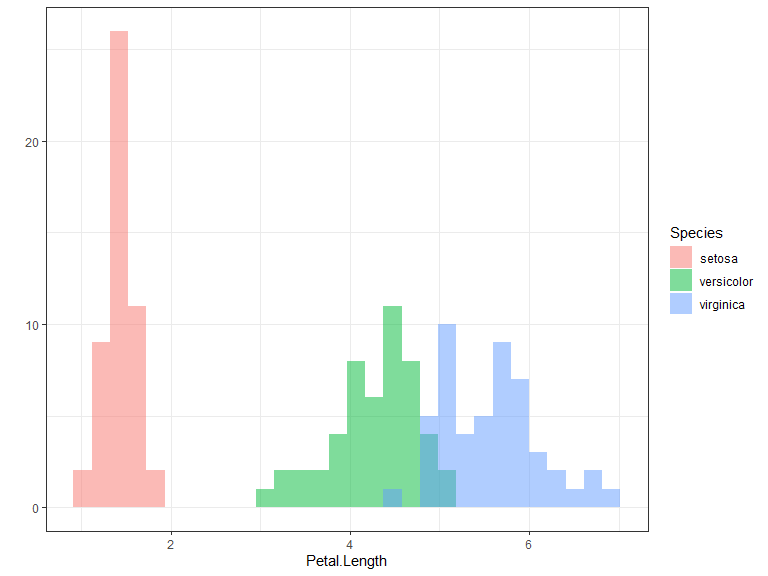
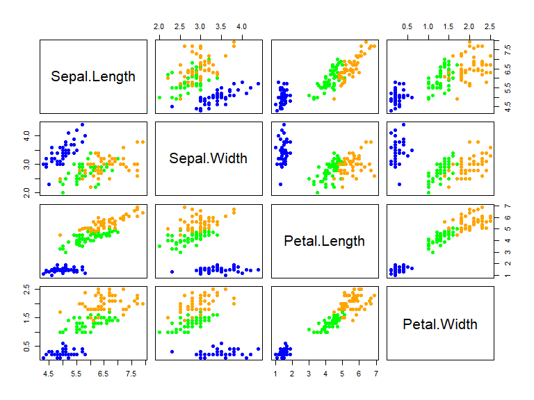

Sección 3 - YAML y opciones locales
Lección 2 - Diseño del documento
1 Introducción
Quarto es un paquete de software que se incluye en el entorno de desarrollo integrado (IDE) RStudio. Este paquete permite a los usuarios crear informes dinámicos y reproducibles utilizando una variedad de lenguajes de programación, incluyendo R, Python y SQL.
Quarto proporciona herramientas para la creación de informes interactivos que pueden incluir gráficos, tablas, imágenes y otros elementos. Además, los informes pueden ser generados en diferentes formatos, como HTML, PDF y Microsoft Word, lo que los hace muy versátiles y fáciles de compartir con otras personas.
Quarto también incluye características avanzadas, como la capacidad de crear informes que se actualizan automáticamente en función de los cambios en los datos subyacentes y la capacidad de colaborar en equipo en la creación de informes.
En resumen, Quarto es un paquete de software muy útil para cualquier persona que trabaje con datos y necesite crear informes dinámicos, reproducibles e interactivos.
En este documento vamos a ver varias de las opciones más básicas para crear un documento académico.
2 Dataset de Iris
El dataset de iris consiste en una base de datos de 150 observaciones de flores pertenecientes a las tres especies siguientes:
Iris setosa
Iris versicolor
Iris virginica
Estas especies pueden visualizarse en la Fig. I.

Para cada una de las observaciones se han tomado 5 variables: longitud del pétalo, longitud del sépalo, anchura del pétalo, anchura del sépalo y especie. En las siguientes secciones se va a analizar esta base de datos.
2.1 Análisis descriptivo
En la Fig. II podemos ver la distribución de frecuencias de la longitud del pétalo según la especie. En este gráfico vemos que la longitud de los pétalos de Iris setosa es mucho menor que de las otras dos especies, siendo I. virginica la que tiene una mayor longitud.
Código

Para evaluar si los cambios eran significativos se utilizó un test ANOVA seguido del Tukey HSD pos hoc test utilizando el software R . En la Tablita 1 se muestran los resultados, donde podemos ver que las diferencias entre especies son significativas.
Código
| diff | lwr | upr | p.adj | |
|---|---|---|---|---|
| versicolor-setosa | 2.798 | 2.59422 | 3.00178 | 0 |
| virginica-setosa | 4.090 | 3.88622 | 4.29378 | 0 |
| virginica-versicolor | 1.292 | 1.08822 | 1.49578 | 0 |
Para complementar, se muestra la relación entre cada par de variables mediante scatterplots en la Fig. III Todas las variables muestran una buena separación de las tres especies, especialmente la especie I. setosa.

Finalmente, en la Fig. IV se muestra la matriz de correlaciones que se ha calculado utilizando el paquete corrplot en el software R (Wei y Simko 2021) . En esta matriz podemos ver que tres de las variables (excepto anchura del sépalo) muestran una alta correlación.
2.2 Modelo de clasificación
Para predecir las especies de Iris se propone un modelo en el que solamente se utilizan las medidas de ancho de sépalo y largo de pétalo, ya que como se vio en la Sec. 2.1 parecen ser las variables más importantes para clasificar las tres especies.
Código
# Data split
set.seed(111)
mySplit <- createDataPartition(iris$Species, p = 0.7, list = F)
myTrain <- iris[mySplit,]
myTest <- iris[-mySplit,]
# Modelo
myModel <- multinom(Species ~ Petal.Length + Sepal.Width,
data = myTrain,
verbose = F)
# Predicciones
myTest$Pred <- predict(myModel, myTest,type = 'class')
# Matriz de confusion
cm <- confusionMatrix(myTest$Species,myTest$Pred)Para ello, se ha utilizado un modelo de regresión logística multinomial a través del paquete de R nnet (Venables y Ripley 2002) El modelo tiene una exactitud global de . El modelo multinomial ha tenido un error por omisión de I. versicolor por I. virginica y otro error por omisión de I. virginica por I. versicolor.
2.3 Modelo de regresión
Finalmente se creó un modelo de regresión para estimar la longitud del pétalo a través de la anchura del sépalo y la anchura del pétalo.
Código
# Modelo lineal
myLm <- lm(Petal.Length ~ Sepal.Width + Petal.Width, data = myTrain)
# Obtener los coeficientes del modelo
beta0 <- round(myLm$coefficients[1], 2) # Intercepto
beta1 <- round(myLm$coefficients[2], 2) # Coeficiente de anchura sepalo
beta2 <- round(myLm$coefficients[3], 2) # Coeficiente de anchura petalo
# Predict
myTest$PredLm <- predict(myLm, myTest,type = 'response')
# Evaluacion resultados
r2 <- R2(myTest$PredLm, myTest$Petal.Length) |>
round(3)
rmse <- RMSE(myTest$PredLm, myTest$Petal.Length) |>
round(3)El modelo se entrenó con un 70% de los datos y se evaluó en los datos restantes. Los estadísticos de bondad de ajuste han dado unos excelentes resultados, con un \(R^2\) de y el rmse un valor de . La Eq. 1 muestra la ecuación de regresión resultante.
\[ PetalLength = 1.93 \ + \ -0.26 \cdot SW \ + \ 2.22 \cdot PW \tag{1}\]